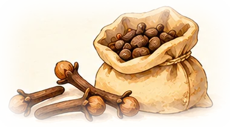

Repte final
Ara respon tu
Per què unes llavors tan petites van moure vaixells, diners i imperis?

🧩 Part 1. Repàs de tot el viatge
Deu preguntes, una o dues de cada capítol.
✍️ Part 2. El teu text argumentat
Respon la gran pregunta en un text breu (150-250 paraules). Fes servir les caixes com a guia: cada una és un paràgraf. El text es desa en aquest navegador mentre escrius.
🧰 Banc de dades: fes-les servir com a proves
Toca una dada per afegir-la al paràgraf on tens el cursor.
Enganxa el text copiat a Google Classroom o al document que et digui el professor.
📏 Rúbrica: com t’avaluaran
Fes-te una autoavaluació abans d’entregar: marca el nivell que creus que tens a cada criteri.
| Criteri | Excel·lent (4) | Notable (3) | Suficient (2) | Cal millorar (1) |
|---|---|---|---|---|
| Tesi | Clara, pròpia i respon tota la pregunta. | Clara però parcial. | Hi és, però confusa. | No hi ha resposta clara. |
| Proves | 3 o més dades correctes del web (xifres, dates, fonts). | 2 dades correctes. | 1 dada o dades poc precises. | Cap dada. |
| Perspectives | Compara europeus, pobles d’Àsia o Amèrica i mariners. | Dues perspectives. | Només la dels europeus. | No es planteja. |
| Causes i conseqüències | Relaciona preus, rutes i canvis fins avui. | Relaciona dos d’aquests elements. | Enumera fets sense relacionar-los. | Fets aïllats o erronis. |
| Expressió | Ben estructurat, connectors i vocabulari històric correcte. | Alguns errors que no dificulten la lectura. | Desordenat o amb errors freqüents. | Difícil d’entendre. |

Has acabat el viatge
Torna a l’inici
Revisa els capítols on no has encertat totes les preguntes.